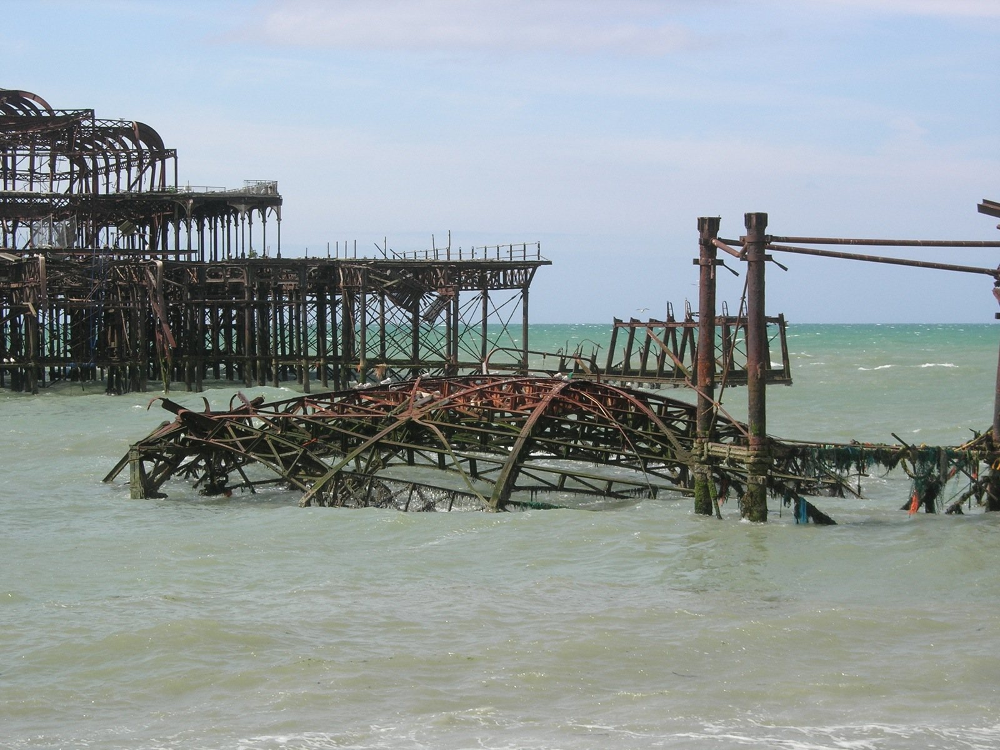
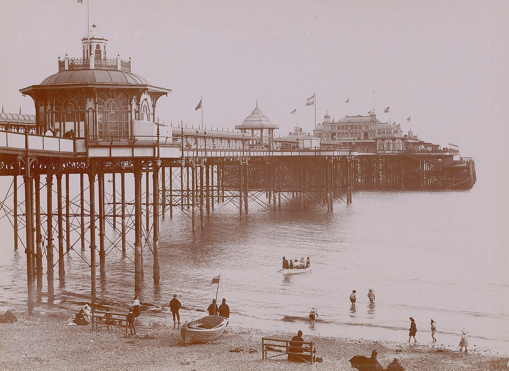
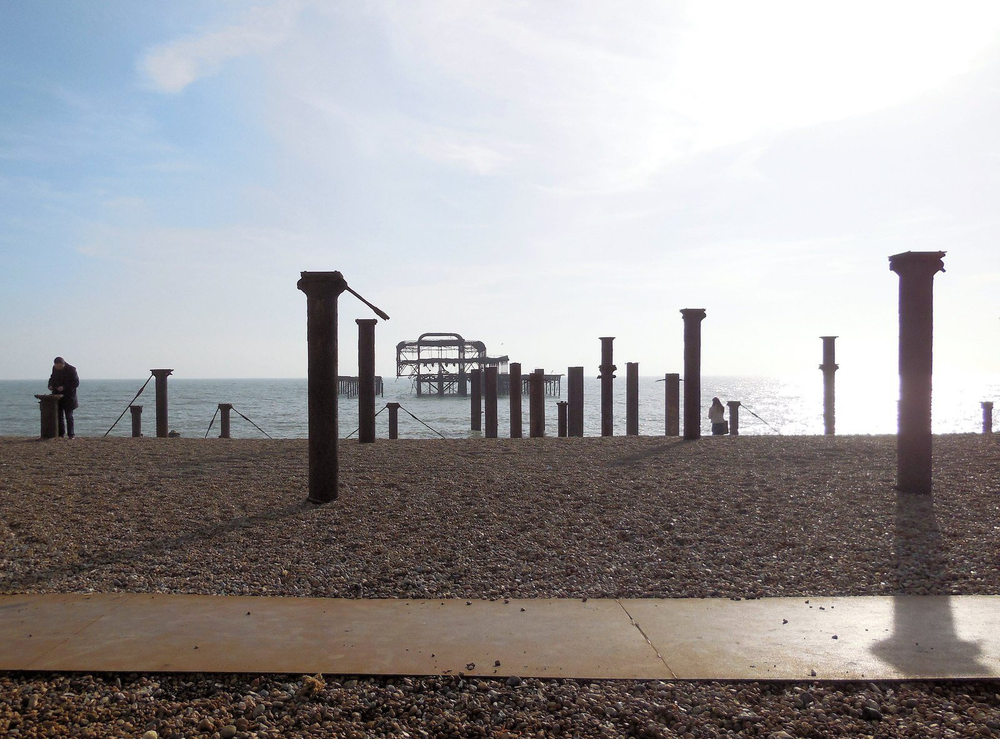
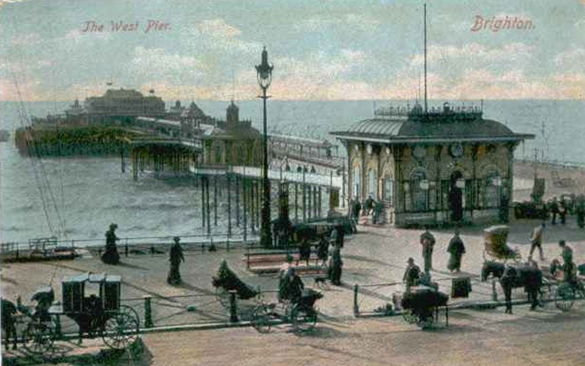
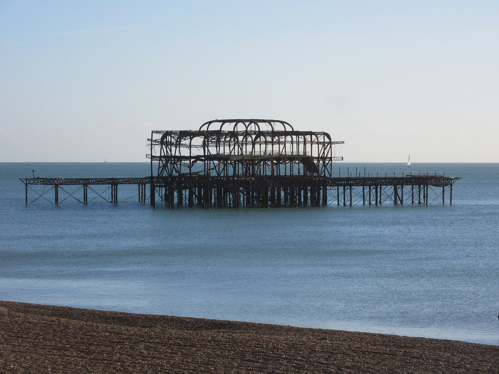
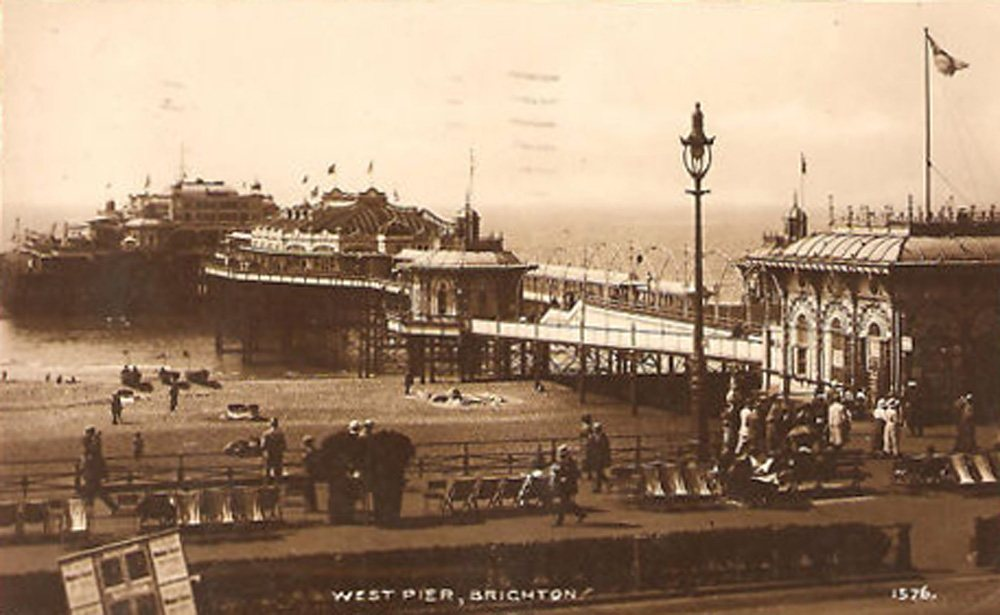
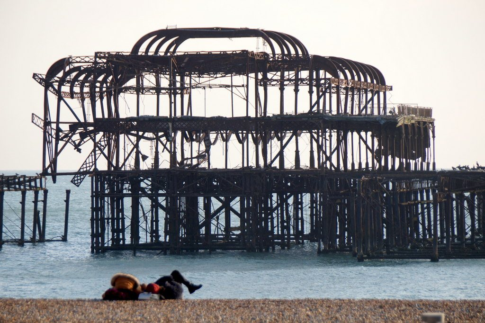
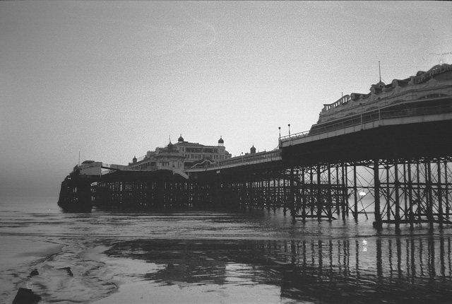

The same pier, then and now.
Drag the line (or use the arrow keys) to compare. Each pair is taken from roughly the same viewpoint. Nobody could stand in exactly the same spot: the pier is no longer there.

 ⇆Then · c.1870–1898Now · Nov 2025
⇆Then · c.1870–1898Now · Nov 2025From the shore end, looking out
Then (c.1870–1898): Unknown photographer (Rijksmuseum collection), CC0, source · No. 3
Now (Nov 2025): Andy Li, CC0, source · No. 41
,_RP-F-F00945-19.jpg){kind=link}



⇆Then · 1896–1900Now · Jun 2006The pier legs at low tide
Then (1896–1900): Unknown, Public domain, source · No. 88
Now (Jun 2006): Dano, CC BY 2.0, source · No. 95

.jpg){kind=link}


⇆Then · c.1900Now · Mar 2014Where the pier met the land
Then (c.1900): Unknown, Public domain, source · No. 224
Now (Mar 2014): Paul Gillett, CC BY-SA 2.0, source · No. 231




⇆Then · c.1920Now · Jan 2017The pier head from the beach
Then (c.1920): Unknown, Public domain, source · No. 6
Now (Jan 2017): Hassocks5489, CC0, source · No. 39

.JPG){kind=link}


⇆Then · Dec 1973Now · Feb 2018Side-on from the shore
Then (Dec 1973): Slbs, CC BY-SA 2.0, source · No. 12
Now (Feb 2018): Mike Pennington, CC BY-SA 2.0, source · No. 79


Every image is openly licensed and credited under its slider and on the credits page. Cropped to line up; the full pictures are on the work pages. Back to the gallery →